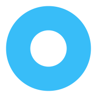
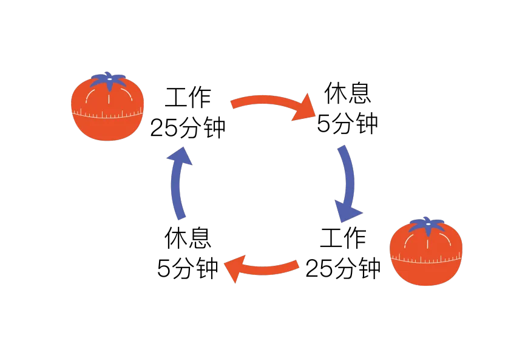

第一节：什么是时间管理
教授，为什么总感觉时间不够用

有时候定了一些目标，自己拖延症很严重，
结果往往不了了之。

这是个很好的问题，相信大家都有这个困扰。
时间对每个人都是公平的，都是每天24小时。
但是每个人对时间的使用方式不同，结果也因人而异。
这里我介绍一个概念： 时间管理
时间管理大师罗x翔？

咳。。咳。。孩子你知道得太多~
简单来说，为了完成目标，我们会通过一些方法技巧和工具，去提高自己的办事效率，这个过程就是时间管理。
大家有没有下面的困惑：
如果你们有上面的问题，可以去学习时间管理，和时间做朋友，培养好习惯，可以更容易实现自己的目标。
希望教授能够指点一二~
没问题，我一定知无不言
时间管理，可以分成三要素：什么时候，做什么样的事，并记录
-
什么时候， 意思是某一段时间，一般划分有整块时间和零碎时间。做什么样的事， 意思是事情重要性等级，一般划分紧急，重要，一般。并记录， 意思是通过什么方式去记录行程，有助于统计反思。
接下来我们来逐个探讨。
-

什么时候: 某一段时间，一般划分有整块时间和零碎时间。
整块时间，通常指的是那些连续、不受打扰的时间段，如工作日的午休时间、晚上的自由时间或周末的整天时间，甚至一个小时也算。
这段时间可以专注于进行深度学习、大型项目的规划与实施或复杂问题的解决。
这里介绍一种高效利用整块时间的管理方法： 番茄工作法。
-
番茄工作法 是一种时间管理方法，它将工作时间划分为一系列25分钟的时间段（称为“番茄时间”），每个时间段后安排短暂的休息，以此循环来提高工作效率和专注力。示意图：
我来说说番茄工作法的具体步骤。
首先，在开始使用番茄工作法之前，要明确你想要做的事情或者目标。
然后，选择一个时间周期，通常为25分钟，称为一个“番茄时间”。使用一个计时器（可以是手机应用、倒计时器或物理时钟）来设置这个时间周期。
在番茄时间开始后，致力于完成你设定的任务，全身心地专注于工作。期间避免分散注意力的事情，如社交媒体、电子邮件等。只有在番茄时间结束之后才可以休息。
番茄时间的中途不能中断，一旦中断，该番茄钟就成了 “烂番茄”，无法继续计时，只能重新开始。
每个番茄时间结束后，休息5-10分钟。利用这段时间休息、放松或做一些与工作无关的事情。自由活动可以帮助大脑得到短暂的休息，以便在下一个番茄时间更加专注。
根据需要，你可以继续进行番茄时间和休息，形成连续的工作周期。每个番茄时间之间的休息可以用来重新评估和调整任务，以确保有效地推进工作。
番茄时间必须严格控制在25分钟吗？

番茄时间的长度通常是25分钟，但这不是绝对的。根据个人情况和任务难度，可以适当调整番茄时间的长度。重要的是保持专注和高效，而不是拘泥于固定的时间。
番茄工作法对我们有什么实际帮助吗？
番茄工作法能够提高专注力、工作效率和创造力；减轻压力、提高工作满意度和幸福感；增强时间管理能力等。此外，它还可以帮助人们更好地规划和管理时间，避免拖延和浪费时间。
在哪些场景我们可以用到它？
番茄工作法适用于各种需要高度专注和效率的场景，如工作、学习、编程、写作等。然而，它并不是适用于所有人或所有情况的万能方法。对于一些需要高度创造性和灵活性的任务，如设计、音乐创作等，可能需要调整使用方式或选择其他时间管理方法。
好了好了，啰啰嗦嗦说得有点多，最后强调一点。
每天顺利完成了多少个完整的番茄钟？又产生了多少个烂番茄？以周为单位，根据记录，判断注意力是否越来越集中了，烂番茄的数量有没有减少，这些都是需要反思的问题。
讲完整块时间，再聊聊零碎时间
零碎时间，是指那些在日常生活中零散、不连续的时间片段。这些时间片段通常比较短暂，可能是几分钟到半小时不等，而且经常出现在等待、通勤、休息等日常活动的间隙中。
零碎时间也是处理琐事和任务的好时机。
这些短暂的时间，也可以产生的价值吗？
可以的。
例如，回复电子邮件、整理桌面、制定第二天的工作计划等。这些任务虽然简单，但也需要一定的时间和精力去完成。在零碎时间内处理这些任务，可以避免它们在整块时间内占用我们的注意力。
同时，我们也需要注意避免在碎片化时间中过度沉迷于社交媒体、游戏等容易分散注意力的活动，以免浪费这些宝贵的时间资源。